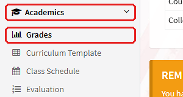
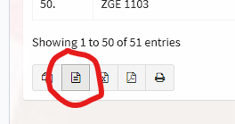

GWA Checker for University of the East
Upload your exported grades table (.csv) to see your overall GWA, then your GWA per academic year and per semester. Your file is read in your browser and is not uploaded anywhere.
How to get your CSV file
Log in to the Student Portal at apps.ue.edu.ph/portals/sp.
Press Academics on the sidebar.
Go to Grades, which is under Academics.

Press All Semester.
Scroll to the very bottom of the table.
Press Save as CSV, the button circled in red below. Then upload the downloaded file above.
